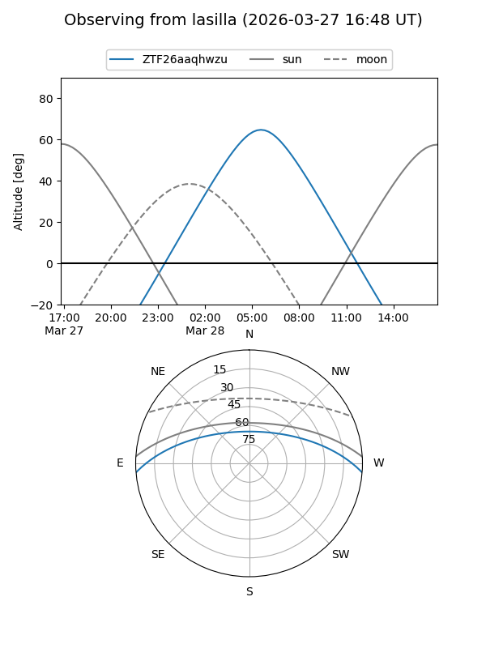
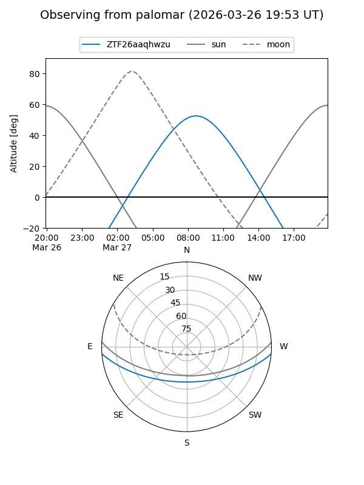

ZTF26aaqhwzu
Target ZTF26aaqhwzu at 2026-03-27 10:33
Aliases and brokers:
FINK: link
Lasair: link
ALeRCE: link
alt names
ZTF26aaqhwzu (ztf,fink_ztf)
Coordinates:
equatorial (ra, dec) = 197.9562,-3.87987
equatorial (HMS+DMS) = 13:11:49.49,-03:52:47.55
galactic (l, b) = (312.7277,+58.60359)
Flags:
Photometry:
last ztfg=17.74
1 ztfg detections
Lightcurve
Visibility


Additional plots